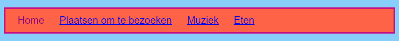

Leer hoe je je navigatiemenu kunt veranderen in een cool uitziende menubalk, door meer CSS-regels toe te voegen aan de stylesheet.
styles.css. Klik onder een sluitende accolade } en druk op Enter om een nieuwe lege regel te maken. Voeg de volgende CSS-regel toe:
nav ul {
background-color: tomato;
}
Zie je dat je twee selectors gebruikte in plaats van één? Als je alleen de ul selector zou gebruiken, zou de regel van invloed zijn op alle ongeordende lijsten op je website. Door de nav selector ook toe te voegen, is
deze alleen van toepassing op lijsten die zich tussen de nav tags bevinden.
Laten we de opsommingstekens weghalen. Dat zijn de stippen voor elk onderdeel in de lijst.
styles.css. Typ het op een nieuwe regel na een } zodat het niet in een andere css-regel staat.
nav ul li {
list-style-type: none;
}
Zie je dat deze set regels drie selectors heeft: het selecteert alle li tags die zich in een ul lijst bevinden die zich binnen een nav sectie bevindt. Poeh!

Laten we nu de lijst horizontaal (van links naar rechts) maken in plaats van verticaal (van boven naar beneden).
display: inline;.
margin-right (rechter marge) en
margin-left (linker marge) toevoegen om ze een beetje ruimte te geven. De CSS-code zou er nu als volgt uit moeten zien:
nav ul li {
list-style-type: none;
display: inline;
margin-right: 10px;
margin-left: 10px;
}
Onthoud: 10px betekent tien pixels.
Laten we het menu veranderen zodat je kunt zien op welke pagina je bent. Dit onderdeel staat niet in de stylesheet.
index.html bestand. Verwijder in de lijst met menu items de link tags vóór en na
het woord Home, zodat het lijst-item voor de home pagina alleen tekst tussen de tags <li></li> is,
zoals deze: <li>Home</li>.
muziek.html de link tag in het lijst-item Muziek verwijderd:
<header>
<nav>
<ul>
<li><a href="index.html">Home</a></li>
<li><a href="attracties.html">Plaatsen om te bezoeken</a></li>
<li>Muziek</li>
<li><a href="eten.html">Eetgelegenheden</a></li>
</ul>
</nav>
</header>
In het volgende hoofdstuk leer je nog meer CSS-trucs om de menubalk er super cool uit te laten zien.